fx-ct-scene-cut at 0.9 s; blur/histogram/mean [[93.78595386162841, 94.12330729166666, 94.12330729166666], [95.21218124564146, 95.53927951388889, 95.53927951388889], [94.75224311079432, 95.08070746527778, 95.08070746527778], [0, 0, 0]]


Diagnostic only. Shared shaders, owner limits and production frames remain unchanged. Images: mobile / candidate / heatmap.
fx-ct-scene-cut at 0.9 s; blur/histogram/mean [[93.78595386162841, 94.12330729166666, 94.12330729166666], [95.21218124564146, 95.53927951388889, 95.53927951388889], [94.75224311079432, 95.08070746527778, 95.08070746527778], [0, 0, 0]]
fx-ct-scene-cut at 1.5 s; blur/histogram/mean [[93.69216534431222, 93.80811631944445, 93.80811631944445], [95.14815560000739, 95.27610677083334, 95.26950954861111], [94.60190758265158, 94.72899305555555, 94.72899305555555], [0, 0, 0]]


fx-ct-scene-cut at 2.1 s; blur/histogram/mean [[93.00186580665806, 93.47723524305556, 93.47723524305556], [94.45182118118015, 94.93216145833334, 94.93216145833334], [93.92871235041648, 94.42263454861111, 94.42263454861111], [0, 0, 0]]


fx-ct-negative-panels at 2.1 s; blur/histogram/mean [[40.28158203725749, 25.142751736111112, 24.994835069444445], [43.803110278769815, 31.79535590277778, 31.79535590277778], [58.899765012801154, 49.25143229166667, 49.25143229166667], [0, 0, 0]]


fx-cr-signal-lost at 2.1 s; blur/histogram/mean [[26.356184093567713, 12.422829861111111, 12.330815972222222], [32.50338655658489, 14.037738715277778, 13.721766493055556], [37.47362696441323, 21.335546875, 21.138498263888888], [0, 0, 0]]


fx-ct-scene-cut at 0.3 s; blur/histogram/mean [[22.690756444745155, 13.38298611111111, 10.947526041666666], [23.142457627354172, 14.186675347222222, 10.862196180555555], [24.660801361563568, 14.099327256944445, 11.864518229166666], [0, 0, 0]]


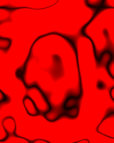
fx-cc-wiggle-flicker at 0.3 s; blur/histogram/mean [[24.081550683717783, 23.28904079861111, 23.28904079861111], [23.694177051965713, 22.770399305555557, 22.770399305555557], [23.33926917814439, 22.198155381944446, 22.198155381944446], [0, 0, 0]]


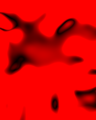
fx-ct-chaotic-heat at 0.3 s; blur/histogram/mean [[21.554596252204323, 14.58415798611111, 10.50412326388889], [18.682937827950088, 18.225390625, 0.12725694444444444], [10.500520235692715, 10.062478298611111, 0.0939453125], [0, 0, 0]]


fx-ct-chaotic-heat at 1.5 s; blur/histogram/mean [[19.186575346038847, 14.831966145833333, 14.110438368055556], [19.50803878705708, 18.790212673611112, 2.260525173611111], [11.31683498123611, 8.154752604166667, 5.513997395833333], [0, 0, 0]]


fx-cc-feverish at 0.9 s; blur/histogram/mean [[6.580043204119745, 6.577604166666666, 6.577604166666666], [18.31426945394354, 18.32890625, 18.32890625], [14.375034390276143, 14.484136284722222, 14.362348090277777], [0, 0, 0]]


fx-cc-wiggle-flicker at 0.9 s; blur/histogram/mean [[15.945374552543235, 15.235698784722222, 15.235698784722222], [15.656554953356626, 14.833441840277779, 14.833441840277779], [14.67703119003296, 13.67013888888889, 13.67013888888889], [0, 0, 0]]


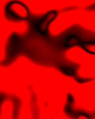
fx-mt-photo-snap at 1.5 s; blur/histogram/mean [[13.394694528226836, 0.4969618055555556, 0.30299479166666665], [13.49215649747433, 0.4966362847222222, 0.33465711805555554], [13.420588467942181, 0.4962239583333333, 0.26953125], [0, 0, 0]]


fx-ct-lightning-crack at 0.3 s; blur/histogram/mean [[11.678427617920777, 1.610546875, 0.26480034722222223], [12.355719256592323, 1.8593967013888888, 0.2511935763888889], [13.055605826045374, 2.044574652777778, 0.26362847222222224], [0, 0, 0]]

fx-cc-shiny-stack at 0.3 s; blur/histogram/mean [[10.422723179139346, 1.721506076388889, 0.20744357638888888], [11.030845228726987, 1.6190755208333334, 0.13674045138888888], [11.6295146711788, 1.4136067708333333, 0.0404296875], [0, 0, 0]]

fx-ov-bg-3d-shapes at 0.3 s; blur/histogram/mean [[10.2828931033016, 1.5036675347222221, 0.9356553819444444], [10.132355635086913, 1.5473307291666667, 0.9449001736111111], [9.3397680966507, 1.3415364583333333, 0.884375], [0, 0, 0]]

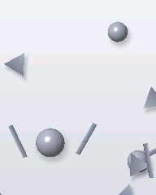
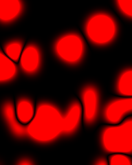
fx-ov-bg-3d-shapes at 0.9 s; blur/histogram/mean [[10.210915937616209, 1.4870442708333333, 0.9092230902777778], [10.072272542066731, 1.528493923611111, 0.9123480902777777], [9.307566002428711, 1.3221788194444444, 0.8667534722222222], [0, 0, 0]]

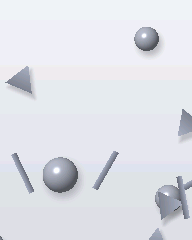
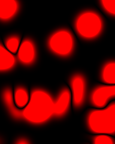
fx-ov-bg-3d-shapes at 1.5 s; blur/histogram/mean [[10.106562064792621, 1.459765625, 0.8756944444444444], [9.977571123265138, 1.5029730902777778, 0.8705078125], [9.210134516379956, 1.295095486111111, 0.8364583333333333], [0, 0, 0]]

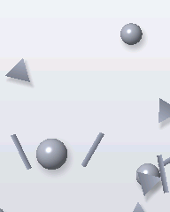
fx-ov-bg-3d-shapes at 2.1 s; blur/histogram/mean [[9.978565886267772, 1.3774739583333333, 0.8055121527777778], [9.85544956909305, 1.4380642361111111, 0.797265625], [9.112418248749545, 1.2342664930555556, 0.7606553819444445], [0, 0, 0]]

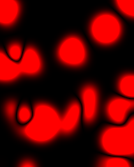
fx-ct-lightning-crack at 1.5 s; blur/histogram/mean [[8.318028217462004, 4.154991319444444, 3.7301649305555555], [8.787994520264766, 4.4265625, 3.8860243055555554], [9.309124092614413, 4.626692708333334, 4.077560763888889], [0, 0, 0]]

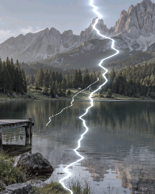
fx-ct-chaotic-heat at 2.1 s; blur/histogram/mean [[8.928876123034613, 8.891102430555556, 8.891102430555556], [8.683787495684882, 8.656336805555556, 8.656336805555556], [4.7143044742925175, 4.709830729166667, 4.709830729166667], [0, 0, 0]]

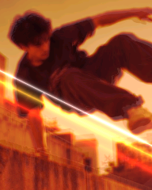